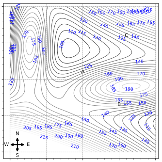
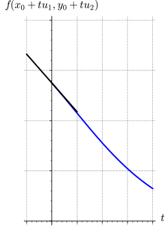
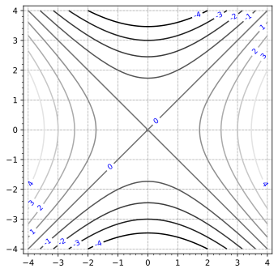
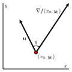
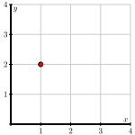
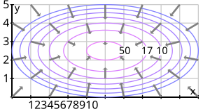
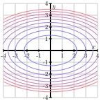

Section11.7Directional Derivatives and the Gradient
Motivating Questions
The partial derivatives of a function \(f\) tell us the rate of change of \(f\) in the direction of the coordinate axes. How can we measure the rate of change of \(f\) in other directions?
What is the gradient of a multivariable function and what does it tell us about the rate of change the function in different directions?
The partial derivatives of a multivariable function tell us the instantaneous rate at which the function’s output changes as we hold all but one independent variable constant (allowing the remaining independent variable to change). It is natural to wonder how we can measure the rate at which a function changes in a direction other than parallel to a coordinate axes. In this section, we investigate this question and will connect the rates of change in other directions to the rates of change given by the partial derivatives. In our preview activity, we will investigate these concepts in terms of a contour map representing elevation in terms of location.
The preview activity uses cardinal directions to specify the direction of displacement vectors. These directions can be described by a compass rose. The compass rose given in Figure 11.7.1 is an example of a sixteen point rose. Note that directions like ESE are read as “east-southeast” half way between east and southeast.
Figure 11.7.2 is a contour plot showing the elevations for a region of a nearby park. The elevations are given in meters above sea level and the horizontal and vertical grid lines are 1 km apart. Several locations are labeled on Figure 11.7.2 with capital letters. We will be refering to \(h(x,y)\) as the function of two variables that gives the elevation as a function of x-coordinates (location in East-West, horizontal direction) and y-coordinates (location North-South, vertical direction).

Figure11.7.2.A contour plot representing the elevation of locations in a nearby park with three locations labeled
(a)
Using Figure 11.7.2 and treating the elevation as a multivariable function \(h(x,y)\text{,}\) state whether each of the following is positive, negative, or zero. Write a sentence to justify your reasoning.
\(\displaystyle h_x(A)\)
\(\displaystyle h_y(A)\)
\(\displaystyle h_x(B)\)
\(\displaystyle h_y(B)\)
\(\displaystyle h_x(C)\)
\(\displaystyle h_y(C)\)
(b)
Suppose we are at the point B. Would you expect the elevation to be increasing, decreasing, or constant if you took a step in the Northeast direction?
(c)
Suppose we are at the point B. Would you expect the elevation to be increasing, decreasing, or constant if you took a step in the Southeast direction?
(d)
Suppose we are at the point A. Would you expect the elevation to be increasing, decreasing, or constant if you took a step in the Southwest direction?
(e)
Suppose we are at the point C. In what direction would you take a step to move in the steepest downhill direction?
(f)
Suppose we are at the point A. In what direction would you take a step to move in the steepest uphill direction?
(g)
Suppose we are at point B. Rank the following directions in order of steepness: Northeast, North, East, West, South
Subsection11.7.1Directional Derivatives
The goal of this section is to measure the rate of change for a function of two variables in a direction that is not parallel to one of the coordinate directions. We will use the classic calculus approach to set up this measurement (approximate our measurement, quantify how the approximation changes on a smaller scale, then use a limit to find the actual value). In order to measure the rate of change in the output of our function, we will use a typical difference quotient
\begin{equation*}
\text{rate of change} = \frac{\text{change in output}}{\text{change in input}}
\end{equation*}
Let \(f\) be a function of two variables, \(x\) and \(y\text{,}\) where we wish to measure the rate of change in the \(\langle a,b\rangle\) direction for \(f\) at the base point \((x_0,y_0)\text{.}\) So we can set up the difference quotient using the points \((x_0+a,y_0+b)\) and \((x_0,y_0\)).
Note here that we use the distance formula to measure the change in the input as distance on the \(xy\)-plane. Figure 11.7.3 shows the plot of a surface given by \(z=f(x,y)\) with the points used in the difference quotient labeled.
Figure11.7.3.A plot of \(f(x,y)\) with the measurements of change in input and output labeled for a change of inputs given by \(\langle a,b\rangle\)
The difference quotient given above is a good start to approximating the rate of change for the output of \(f\) in the direction \(\langle a,b\rangle\) (the first step in our classic calculus approach), but it is not clear how this approximation will change when we look at smaller scales. Specifically, we will need to look at what happens to this approximation as we shrink the step size, \(\sqrt{a^2+b^2}\to 0\text{.}\) We can separate the length of the vector \(\langle a,b \rangle \) from its direction by finding the unit vector in the direction of \(\langle a,b\rangle\text{.}\)
Let \(\vu=\langle u_1,u_2\rangle \) be the unit vector in the same direction as \(\langle a,b \rangle\text{.}\) Thus, we can express \(\langle a,b \rangle = t \langle u_1,u_2\rangle\text{,}\) where \(t\) is the step size and \(\vu=\langle u_1,u_2\rangle \) is the unit vector in the direction we want to measure the rate of change of \(f\text{.}\) Our difference quotient becomes
and looking at smaller scales will be accomplished by looking at what happens as \(t\) goes to zero. This accomplishes the second step of our classic calculus approach in quantifying how our approximation will work on smaller scales. We can take the limit as \(t \to 0\) to get our definition for the directional derivative.
Definition11.7.4.
Let \(f = f(x,y)\) be a function of two variables. The derivative of \(f\) at the point \((x,y)\) in the direction of the unit vector \(\vu = \langle u_1, u_2 \rangle\) is denoted \(D_{\vu}f(x,y)\) and is given by
for those values of \(x\) and \(y\) for which the limit exists.
The notation \(D_{\vu}f(x,y)\) can also be read as the directional derivative of \(f\) in the direction \(\vu\) at the point \((x,y)\text{.}\) While this may seem like a handful, each piece of this statement is necessary for a directional derivative; We need to specify what function we are looking at the rate of change of, the location at which we are looking at the rate of change, AND the direction in which we will change the inputs. When we evaluate the directional derivative \(D_{\vu} f(x,y)\) at a point \((x_0, y_0)\text{,}\) the result \(D_{\vu} f(x_0,y_0)\) tells us the instantaneous rate at which \(f\) changes at \((x_0, y_0)\) per unit increase in the direction of the vector \(\vu\text{.}\)
We will take a moment to discuss something you may have noticed which will connect to our method of understanding surfaces (and their defining functions) by looking at slices. We can think about the directional derivative as a single variable calculus problem if we cut our surface in the \(\rangle u_1,u_2\langle \) direction through our base point.
Figure11.7.5.A plot of \(f(x,y)\) with a trace shown from the point \((x_0,y_0)\) in the direction \(\langle u_1,u_2 \rangle\)
In particular, we can parameterize the trace along the surface by noticing our inputs correspond to the line in the xy-plane given by \(\langle x_0+ u_1 t, y_0 + u_2 t\rangle\) (shown in red on Figure 11.7.5) and thus our trace along the surface will be given by \(\vr(t)=\langle x_0+ u_1 t, y_0 + u_2 t , f(x_0+ u_1 t, y_0 + u_2 t) \rangle\) (shown in blue on Figure 11.7.5). We can visualize the directional derivative as the slope of a tangent line along this trace as drawn in black on Figure 11.7.6. The quantity \(D_{\vu} f(x_0,y_0)\) tells us the slope of the line tangent to the surface in the direction of \(\vu\) at the point \((x_0,y_0,f(x_0,y_0))\text{.}\)

Figure11.7.6.A plot of the trace of \(f\) along the direction \(\langle u_1,u_2\rangle\) with tangent line drawn at point corresponding to \((x_0,y_0)\)
Subsection11.7.2Computing the Directional Derivative
In a similar way to how we developed algebraic rules for calculating standard derivatives in single variable calculus and for partial derivatives in multivariable calculus, we can also find a way to evaluate directional derivatives without resorting to the limit definition found in Equation (11.7.1). We will look at these algebraic shortcuts from two perspectives; first, we will look at (11.7.1) as a composition of functions and use the chain rule from Section 11.6. Second, we will look at how the directional derivative can be found from our linearization when we have “nice” functions.
We are interested in the instantaneous rate of change of \(f\) at a point \((x_0,y_0)\) in the direction \(\vu = \langle u_1, u_2 \rangle\text{,}\) where \(\vu\) is a unit vector. Our trace along the surface will be given by \(\vr(t)=\langle x_0+ u_1 t, y_0 + u_2 t , f(x_0+ u_1 t, y_0 + u_2 t) \rangle\text{.}\) In particular, the input variables \(x\) and \(y\) are therefore changing according to
\begin{equation*}
x = x_0 + u_1t \ \ \ \ \ \text{ and } \ \ \ \ \ y = y_0 + u_2t
\end{equation*}
Observe that \(\frac{dx}{dt} = u_1\) and \(\frac{dy}{dt} = u_2\) for all values of \(t\text{.}\) Since \(\vu\) is a unit vector, it follows that a point along the line of inputs along the xy-plane; that is, each single unit of time corresponds to movement of a single unit of distance in that direction. This observation allows us to use the Chain Rule to calculate the directional derivative, which measures the instantaneous rate of change of \(f\) with respect to change in the direction \(\vu\text{.}\)
We can express the output of our function along the given direction as a composition of functions, \(f(t)=f(x(t), y(t))\text{,}\) which means we can apply the chain rule to get
To use Equation (11.7.2), we must have a unit vector \(\vu = \langle u_1, u_2 \rangle\) in the direction of motion. In the event that we have a direction prescribed by a non-unit vector, we must first scale the vector to have length 1.
Activity11.7.2.
In this activity, we will practice using Equation (11.7.2) to calculate some directional derivatives and make sense of these results for a few cases. For all parts of this activity, let \(f(x,y) = 3xy-x^2y^3\text{.}\)
(a)
Calculate \(f_x(x,y)\) and \(f_y(x,y)\text{.}\)
(b)
Use Equation (11.7.2) to determine \(D_{\vi} f(x,y)\) and \(D_{\vj} f(x,y)\text{.}\) Write a couple of sentences to describe what familiar functions \(D_{\vi} f\) and \(D_{\vj} f\) are. Remember that \(\vi\) is the unit vector in the positive \(x\)-direction and \(\vj\) is the unit vector in the positive \(y\)-direction.
(c)
Use Equation (11.7.2) to find the derivative of \(f\) in the direction of the vector \(\vv = \langle 2, 3 \rangle\) at the point \((1,-1)\text{.}\) Remember that a unit direction vector is needed.
(d)
Use Equation (11.7.2) to find the derivative of \(f\) in the direction of the vector \(\vv = \langle 4, 6 \rangle\) at the point \((1,-1)\text{.}\)
(e)
Use Equation (11.7.2) to find the derivative of \(f\) in the direction of the vector \(\vv = \langle -2, -3 \rangle\) at the point \((1,-1)\text{.}\) Write a couple of sentences to explain how this result is different than your answer to the previous two tasks, even though the direction vectors are parallel.
We found Equation(11.7.2) by considering our definition for the directional derivative 11.7.4 as a composition of functions and utilizing our chain rule. A very useful idea when we have multivariable functions that are locally linear is that evaluating a limit for how the function is changing near a point will give the same result as asking what the corresponding change would be on the linearization or tangent plane. Remember that on very small scales there is virtually no difference between the (locally linear) function and the linearization as demonstrated by Figure 11.5.3.
The equation of the plane tangent to the graph of \(f\) at the point \((x_0,y_0,f(x_0,y_0))\) is
\begin{equation}
z = f(x_0,y_0) + f_x(x_0,y_0)(x-x_0) + f_y(x_0,y_0)(y-y_0)\tag{11.7.3}
\end{equation}
If \(f\) is a locally linear function, then the directional derivative \(D_{\vu}f(x_0,y_0)\) will be the same as the rate of change along the tangent plane in the direction of \(\vu\text{.}\) Remember that the rate of change will be the same regardless of step size on the tangent plane (this is NOT true on the surface \(z=f(x,y)\)). So we will look at the quotient
Via the Chain Rule and the linearization, we have seen that for a given function \(f = f(x,y)\text{,}\) its instantaneous rate of change in the direction of a unit vector \(\vu = \langle u_1, u_2 \rangle\) is given by
In particular, we saw how the rate of change along the linearization in a given direction is given by a linear combination of the rates of change in the coordinate directions (partial derivatives) where the weight of each partial derivative comes from the components of our unit vector. You may recognize the form of (11.7.4) as being similar to a dot product.
Recall the dot product of two vectors \(\vv = \langle v_1, v_2 \rangle\) and \(\vu = \langle u_1, u_2 \rangle\) is computed by
Thus we may recast Equation (11.7.4) in a way that has geometric meaning related to the dot product. In particular, we see that \(D_{\vu}f(x_0,y_0)\) is the dot product of the vector \(\left\langle f_x(x_0,y_0), f_y(x_0,y_0) \right\rangle\) and the vector \(\vu\text{.}\) This is particularly useful because the vector \(\left\langle f_x(x_0,y_0), f_y(x_0,y_0) \right\rangle\) comes from simple calculations that tell us how the function \(f\) is changing near the input \((x_0,y_0)\text{.}\) We give this vector a special name and will spend most of the rest of this section talking about the importance of this vector.
Definition11.7.8.
The vector formed by partial derivatives of \(f\) is called the gradient of \(f\) and denote it
In the following activity, we investigate some of what the gradient tells us about the behavior of a function \(f\text{.}\)
Activity11.7.3.
Let’s consider the function \(f\) defined by \(f(x,y) = \frac{1}{3}(x^2-y^2)\text{.}\) Some contours for this function are shown in Figure 11.7.9.

Figure11.7.9.A contour plot of \(f(x,y)=\frac{1}{3}(x^2-y^2)\)
(a)
Find the gradient \(\nabla f (x,y)\text{.}\)
(b)
For each of the following points \((x_0,y_0)\text{,}\) evaluate the gradient \(\nabla f(x_0,y_0)\) and sketch the gradient vector with its tail at \((x_0,y_0)\text{.}\) Some of the vectors are too long to fit onto the plot, but we’d like to draw them to scale; to do so, scale each vector by a factor of 1/2.
\(\displaystyle (x_0,y_0) = (2,0)\)
\(\displaystyle (x_0,y_0) = (0,2)\)
\(\displaystyle (x_0,y_0) = (2,2)\)
\(\displaystyle (x_0,y_0) = (2,1)\)
\(\displaystyle (x_0,y_0) = (-3,2)\)
\(\displaystyle (x_0,y_0) = (-2,-4)\)
\(\displaystyle (x_0,y_0) = (0,0)\)
(c)
Write a few sentences about how the direction of the gradient at each of these points is related to the the contour passing through that point.
(d)
Does the output of \(f\) increase or decrease in the direction of \(\nabla f(x_0,y_0)\text{?}\) Write a few sentences and use examples from the points above to justify your answer.
As a vector, \(\nabla f(x_0,y_0)\) defines a direction and a length. As we will soon see, both of these convey important information about the behavior of \(f\) near \((x_0,y_0)\text{.}\)
Subsection11.7.4The Direction of the Gradient
Remember that the dot product also conveys information about the angle between the two vectors. If \(\theta\) is the angle between \(\nabla
f(x_0,y_0)\) and \(\vu\) (where \(\vu\) is a unit vector), then we also have that
In particular, when \(\theta\) is a right angle, as shown on the left of Figure 11.7.10, then \(D_{\vu}f(x_0,y_0) = 0\text{,}\) because \(\cos(\theta) = 0\text{.}\) Since the value of the directional derivative is 0, this means that \(f\) is unchanging in this direction, and hence \(\vu\) must be tangent to the contour of \(f\) that passes through \((x_0,y_0)\text{.}\) In other words, \(\nabla f(x_0,y_0)\) is orthogonal to the contour through \((x_0,y_0)\text{.}\) This shows that the gradient vector at a given point is always perpendicular to the contour passing through the point, confirming that what we saw in part (c) of Activity 11.7.3 holds in general.

Figure11.7.10.The sign of \(D_{\vu} f(x_0,y_0)\) is determined by \(\theta\text{.}\)
Moreover, when \(\theta\) is an acute angle, it follows that \(\cos(\theta) > 0\) so since
and therefore \(D_{\vu}f(x_0,y_0) > 0\text{,}\) as shown in the middle image in Figure 11.7.10. This means that \(f\) is increasing in any direction where \(\theta\) is acute. In a similar way, when \(\theta\) is an obtuse angle, then \(\cos(\theta) \lt 0\) so \(D_{\vu}f(x_0,y_0) \lt 0\text{,}\) as seen on the right in Figure 11.7.10. This means that \(f\) is decreasing in any direction for which \(\theta\) is obtuse.
Finally, as we can see in the following activity, we may also use the gradient to determine the directions in which the function is increasing and decreasing most rapidly.
Activity11.7.4.
In this activity we investigate how the gradient is related to the directions of greatest increase and decrease of a function. Let \(f\) be a differentiable function and \(\vu\) a unit vector.
Let \(\theta\) be the angle between \(\nabla f(x_0,y_0)\) and \(\vu\text{.}\) Use the relationship between the dot product and the angle between two vectors to explain why
At the point \((x_0,y_0)\text{,}\) the only quantity in Equation (11.7.6) that can change is \(\theta\) (which determines the direction \(\vu\) of travel). Explain why \(\theta = 0\) makes the quantity
When \(\theta = 0\text{,}\) in what direction does the unit vector \(\vu\) point relative to \(\nabla f(x_0,y_0)\text{?}\) Why? What does this tell us about the direction of greatest increase of \(f\) at the point \((x_0,y_0)\text{?}\)
In what direction, relative to \(\nabla f(x_0,y_0)\text{,}\) does \(f\) decrease most rapidly at the point \((x_0,y_0)\text{?}\)
State the unit vectors \(\vu\) and \(\vv\) (in terms of \(\nabla f(x_0,y_0)\)) that provide the directions of greatest increase and decrease for the function \(f\) at the point \((x_0,y_0)\text{.}\) What important assumption must we make regarding \(\nabla f(x_0,y_0)\) in order for these vectors to exist?
Subsection11.7.5The Length of the Gradient
Having established in Activity 11.7.4 that the direction in which a function increases most rapidly at a point \((x_0,y_0)\) is the unit vector \(\vu\) in the direction of the gradient, (that is, \(\vu = \frac{1}{|\nabla f(x_0,y_0)|} \nabla f(x_0,y_0)\text{,}\) provided that \(\nabla f(x_0,y_0) \ne \vzero\)), it is also natural to ask, “in the direction of greatest increase for \(f\) at \((x_0,y_0)\text{,}\) what is the value of the rate of increase?” In this situation, we are asking for the value of \(D_{\vu} f(x_0,y_0)\) where \(\vu = \frac{1}{|\nabla f(x_0,y_0)|} \nabla f(x_0,y_0)\text{.}\)
Using the now familiar way to compute the directional derivative, we see that
Next, we recall two important facts about the dot product: (i) \(\vw\cdot (c \vv) = c (\vw \cdot \vv)\) for any scalar \(c\text{,}\) and (ii) \(\vw \cdot \vw = |\vw|^2\text{.}\) Applying these properties to the most recent equation involving the directional derivative, we find that
Finally, since \(\nabla f(x_0,y_0)\) is a nonzero vector, its length \(|\nabla f(x_0,y_0)|\) is a nonzero scalar, and thus we can simplify the preceding equation to establish that
We summarize our most recent work by stating two important facts about the gradient.
Important facts about the gradient.
Let \(f\) be a differentiable function and \((x_0,y_0)\) a point for which \(\nabla f(x_0,y_0) \ne \vzero\text{.}\) Then \(\nabla f(x_0,y_0)\) points in the direction of greatest increase of \(f\) at \((x_0,y_0)\text{,}\) and the instantaneous rate of change of \(f\) in that direction is the length of the gradient vector. That is, if \(\vu = \frac{1}{|\nabla f(x_0,y_0)|} \nabla f(x_0,y_0)\text{,}\) then \(\vu\) is a unit vector in the direction of greatest increase of \(f\) at \((x_0,y_0)\text{,}\) and \(D_{\vu} f(x_0,y_0) = |\nabla f(x_0,y_0)|\text{.}\)
Activity11.7.5.
Consider the function \(f\) defined by \(f(x,y) = -x + 2xy - y\text{.}\)
Find the gradient \(\nabla f(1,2)\) and sketch it on Figure 11.7.11.

Figure11.7.11.A plot for the gradient \(\nabla f(1,2)\text{.}\)
Sketch the unit vector \(\vz = \left\langle-\frac1{\sqrt{2}},
-\frac1{\sqrt{2}}\right\rangle\) on Figure 11.7.11 with its tail at \((1,2)\text{.}\) Now find the directional derivative \(D_{\vz}f(1,2)\text{.}\)
What is the slope of the graph of \(f\) in the direction \(\vz\text{?}\) What does the sign of the directional derivative tell you?
Consider the vector \(\vv = \langle 2,-1\rangle\) and sketch \(\vv\) on Figure 11.7.11 with its tail at \((1,2)\text{.}\) Find a unit vector \(\vw\) pointing in the same direction of \(\vv\text{.}\) Without computing \(D_{\vw}f(1,2)\text{,}\) what do you know about the sign of this directional derivative? Now verify your observation by computing \(D_{\vw}f(1,2)\text{.}\)
In which direction (that is, for what unit vector \(\vu\)) is \(D_{\vu}f(1,2)\) the greatest? What is the slope of the graph in this direction?
Corresponding, in which direction is \(D_{\vu}f(1,2)\) least? What is the slope of the graph in this direction?
Sketch two unit vectors \(\vu\) for which \(D_{\vu}f(1,2) = 0\) and then find component representations of these vectors.
Suppose you are standing at the point \((3,3)\text{.}\) In which direction should you move to cause \(f\) to increase as rapidly as possible? At what rate does \(f\) increase in this direction?
Subsection11.7.6Applications
The gradient finds many natural applications. For example, situations often arise — for instance, constructing a road through the mountains or planning the flow of water across a landscape — where we are interested in knowing the direction in which a function is increasing or decreasing most rapidly.
For example, consider a two-dimensional version of how a heat-seeking missile might work.(This application is borrowed from United States Air Force Academy Department of Mathematical Sciences.) Suppose that the temperature surrounding a fighter jet can be modeled by the function \(T\) defined by
where \((x,y)\) is a point in the plane of the fighter jet and \(T(x,y)\) is measured in degrees Celsius. Some contours and gradients \(\nabla T\) are shown on the left in Figure 11.7.12.

Figure11.7.12.Contours and gradient for \(T(x,y)\) and the missile’s path.
A heat-seeking missile will always travel in the direction in which the temperature increases most rapidly; that is, it will always travel in the direction of the gradient \(\nabla T\text{.}\) If a missile is fired from the point \((2,4)\text{,}\) then its path will be that shown on the right in Figure 11.7.12.
In the final activity of this section, we consider several questions related to this context of a heat-seeking missile, and foreshadow some upcoming work in Section 11.9.
Activity11.7.6.
The temperature \(T(x,y)\) has its maximum value at the fighter jet’s location. State the fighter jet’s location and explain how Figure 11.7.12 tells you this.
Determine \(\nabla T\) at the fighter jet’s location and give a justification for your response.
Suppose that a different function \(f\) has a local maximum value at \((x_0,y_0)\text{.}\) Sketch the behavior of some possible contours near this point. What is \(\nabla f(x_0,y_0)\text{?}\) (Hint: What is the direction of greatest increase in \(f\) at the local maximum?)
Suppose that a function \(g\) has a local minimum value at \((x_0,y_0)\text{.}\) Sketch the behavior of some possible contours near this point. What is \(\nabla g(x_0,y_0)\text{?}\)
If a function \(g\) has a local minimum at \((x_0,y_0)\text{,}\) what is the direction of greatest increase of \(g\) at \((x_0,y_0)\text{?}\)
Subsection11.7.7Summary
The directional derivative of \(f\) at the point \((x,y)\) in the direction of the unit vector \(\vu = \langle u_1, u_2 \rangle\) is
for those values of \(x\) and \(y\) for which the limit exists. In addition, \(D_{\vu}f(x,y)\) measures the slope of the graph of \(f\) when we move in the direction \(\vu\text{.}\) Alternatively, \(D_{\vu} f(x_0,y_0)\) measures the instantaneous rate of change of \(f\) in the direction \(\vu\) at \((x_0,y_0)\text{.}\)
The gradient of a function \(f=f(x,y)\) at a point \((x_0,y_0)\) is the vector
At any point where the gradient is nonzero, gradient is orthogonal to the contour through that point and points in the direction in which \(f\) increases most rapidly; moreover, the slope of \(f\) in this direction equals the length of the gradient \(|\nabla f(x_0,y_0)|\text{.}\) Similarly, the opposite of the gradient points in the direction of greatest decrease, and that rate of decrease is the opposite of the length of the gradient.
Exercises11.7.8Exercises
1.
Consider the function \(f(x,y,z) = xy + yz^2 + xz^3\text{.}\)
Find the gradient of \(f\text{:}\)
\(\langle\), , \(\rangle\)
Find the gradient of \(f\) at the point (2, 1, 2).
\(\langle\), , \(\rangle\)
Find the rate of change of the function \(f\) at the point (2, 1,2) in the direction \(\mathbf u = \langle -2/\sqrt{54}, 5/\sqrt{54}, 5/\sqrt{54} \rangle\text{.}\)
2.
If \(f \left( x, y \right) = 3 x^{2} - 2 y^{2}\text{,}\) find the value of the directional derivative at the point \(\left( -3, -4 \right)\) in the direction given by the angle \(\theta = \frac{2 \pi}{6}\text{.}\)
3.
Find the directional derivative of \(\displaystyle f(x,y,z) = 4xy+z^{2}\) at the point \((5,1,3)\) in the direction of the maximum rate of change of \(f\text{.}\)
The temperature at any point in the plane is given by \(\displaystyle T(x,y) = \frac{100}{x^{2}+y^{2}+3}\text{.}\)
(a) What shape are the level curves of \(T\text{?}\)
lines
circles
hyperbolas
ellipses
parabolas
none of the above
(b) At what point on the plane is it hottest?
What is the maximum temperature?
(c) Find the direction of the greatest increase in temperature at the point \((3,-3)\text{.}\)
What is the value of this maximum rate of change, that is, the maximum value of the directional derivative at \((3,-3)\text{?}\)
(d) Find the direction of the greatest decrease in temperature at the point \((3,-3)\text{.}\)
What is the value of this most negative rate of change, that is, the minimum value of the directional derivative at \((3,-3)\text{?}\)
5.
The temperature at a point (x,y,z) is given by \(\displaystyle
T(x,y,z) = 200e^{-x^2 -y^2/4 - z^2/9}\text{,}\) where \(T\) is measured in degrees Celsius and x,y, and z in meters. There are lots of places to make silly errors in this problem; just try to keep track of what needs to be a unit vector.
Find the rate of change of the temperature at the point (-1, -1, -1) in the direction toward the point (-3, 4, 5).
In which direction (unit vector) does the temperature increase the fastest at (-1, -1, -1)?
\(\langle\), ,\(\rangle\)
What is the maximum rate of increase of \(T\) at (-1, -1, -1)?
6.
If \(\displaystyle f(x,y,z) = 2zy^{2}\text{,}\) then the gradient at the point \((6,5,6)\) is
\(\nabla f (6,5,6) =\)
7.
The concentration of salt in a fluid at \((x,y,z)\) is given by \(F(x,y,z) = 2x^{2}+3y^{4}+x^{2}z^{2}\) mg/cm\({}^3\text{.}\) You are at the point \((1,1,1)\text{.}\)
(a) In which direction should you move if you want the concentration to increase the fastest?
direction:
(Give your answer as a vector.)
(b) You start to move in the direction you found in part (a) at a speed of \(4\) cm/sec. How fast is the concentration changing?
rate of change =
8.
At a certain point on a heated metal plate, the greatest rate of temperature increase, 4 degrees Celsius per meter, is toward the northeast. If an object at this point moves directly north, at what rate is the temperature increasing?
degrees Celsius per meter
9.
Suppose that you are climbing a hill whose shape is given by \(z = 409 - 0.07 x^2 -0.09 y^2\text{,}\) and that you are at the point (20, 30, 300).
In which direction (unit vector) should you proceed initially in order to reach the top of the hill fastest?
\(\langle\),\(\rangle\)
If you climb in that direction, at what angle above the horizontal will you be climbing initially (radian measure)?
10.
Are the following statements true or false?
If \(f(x,y)\) has \(f_x(a,b) = 0\) and \(f_y(a,b) = 0\) at the point \((a,b)\text{,}\) then \(f\) is constant everywhere.
Suppose \(f_x(a,b)\) and \(f_y(a,b)\) both exist. Then there is always a direction in which the rate of change of \(f\) at \((a,b)\) is zero.
If \(\vec{u}\) is a unit vector, then \(f_{\vec{u}} (a,b)\) is a vector.
\(f_{\vec{u}} \, (a,b)\) is parallel to \(\vec{u}\text{.}\)
\(\nabla f(a,b)\) is a vector in 3-dimensional space.
The gradient vector \(\nabla f(a,b)\) is tangent to the contour of \(f\) at \((a,b)\text{.}\)
If \(\vec{u}\) is perpendicular to \(\nabla f(a,b)\text{,}\) then \(f_{\vec{u}} \, (a,b) = \langle 0, 0 \rangle\text{.}\)
11.
Let \(E(x,y) = \frac{100}{1+(x-5)^2 + 4(y-2.5)^2}\) represent the elevation on a land mass at location \((x,y)\text{.}\) Suppose that \(E\text{,}\)\(x\text{,}\) and \(y\) are all measured in meters.
Find \(E_x(x,y)\) and \(E_y(x,y)\text{.}\)
Let \(\vu\) be a unit vector in the direction of \(\langle -4,3 \rangle\text{.}\) Determine \(D_{\vu} E(3,4)\text{.}\) What is the practical meaning of \(D_{\vu} E(3,4)\) and what are its units?
Find the direction of greatest increase in \(E\) at the point \((3,4)\text{.}\)
Find the instantaneous rate of change of \(E\) in the direction of greatest decrease at the point \((3,4)\text{.}\) Include units on your answer.
At the point \((3,4)\text{,}\) find a direction \(\vw\) in which the instantaneous rate of change of \(E\) is 0.
12.
Find all directions in which the directional derivative of \(f(x,y) = ye^{-xy}\) is 1 at the point \((0,2)\text{.}\)
13.
Find, if possible, a function \(f\) such that
\begin{equation*}
\nabla f = \left\langle \sin(yz), xz\cos(yz)+2y, xy\cos(yz)+\frac{5}{z} \right\rangle\text{.}
\end{equation*}
If not possible, explain why.
14.
Let \(f(x,y) = x^2+3y^2\text{.}\)
Find \(\nabla f(x,y)\) and \(\nabla f(1,2)\text{.}\)
Find the direction of greatest increase in \(f\) at the point \((1,2)\text{.}\) Explain. A graph of the surface defined by \(f\) is shown at left in Figure 11.7.13. Illustrate this direction on the surface.
A contour diagram of \(f\) is shown at right in Figure 11.7.13. Illustrate your calculation from (b) on this contour diagram.

Figure11.7.13.Left: Graph of \(f(x,y) = x^2+3y^2\text{.}\) Right: Contours.
Find a direction \(\vw\) for which the derivative of \(f\) in the direction of \(\vw\) is zero.
15.
The properties of the gradient that we have observed for functions of two variables also hold for functions of more variables. In this problem, we consider a situation where there are three independent variables. Suppose that the temperature in a region of space is described by
and that you are standing at the point \((1,2,-1)\text{.}\)
Find the instantaneous rate of change of the temperature in the direction of \(\vv=\langle 0, 1, 2\rangle\) at the point \((1,2,-1)\text{.}\) Remember that you should first find a unit vector in the direction of \(\vv\text{.}\)
In what direction from the point \((1,2,-1)\) would you move to cause the temperature to decrease as quickly as possible?
How fast does the temperature decrease in this direction?
Find a direction in which the temperature does not change at \((1,2,-1)\text{.}\)
16.
Figure 11.7.14 shows a plot of the gradient \(\nabla f\) at several points for some function \(f=f(x,y)\text{.}\)
Figure11.7.14.The gradient \(\nabla f\text{.}\)
Consider each of the three indicated points, and draw, as best as you can, the contour through that point.
Beginning at each point, draw a curve on which \(f\) is continually decreasing.